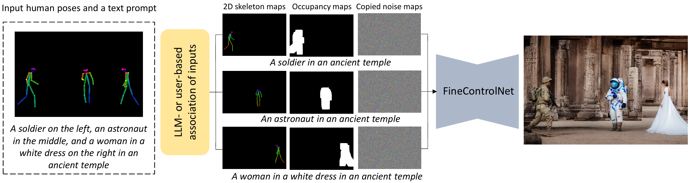
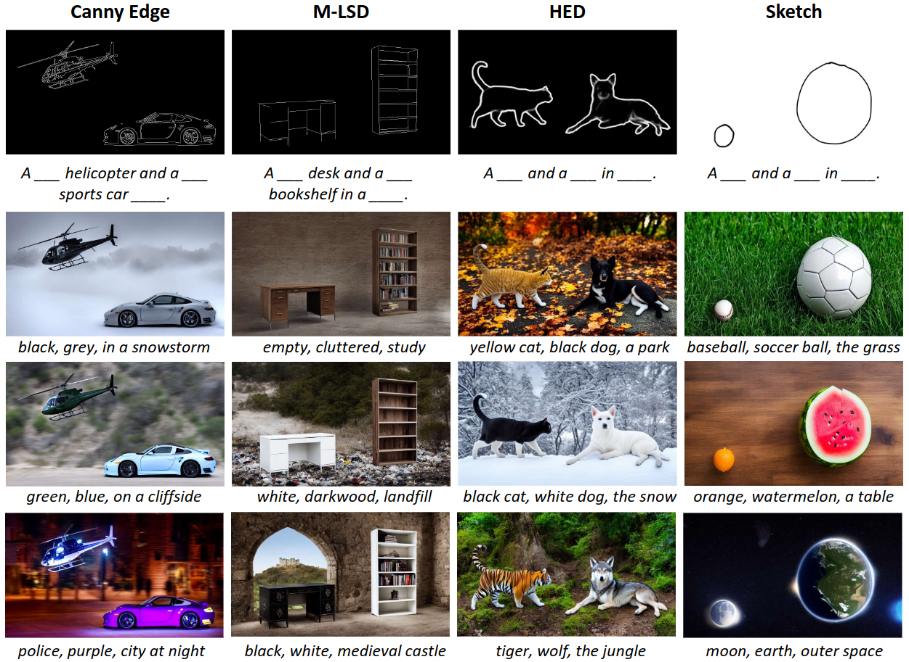

FineControlNet produces coherent images from text and spatial conditioning.
Recently introduced ControlNet has the ability to steer the text-driven image generation process with geometric input such as human 2D pose, or edge features. While ControlNet provides control over the geometric form of the instances in the generated image, it lacks the capability to dictate the visual appearance of each instance.
We present FineControlNet to provide fine control over each instance’s appearance while maintaining the precise pose control capability. Specifically, we develop and demonstrate FineControlNet with geometric control via human pose images and appearance control via instance-level text prompts. The spatial alignment of instance-specific text prompts and 2D poses in latent space enables the fine control capabilities of FineControlNet.
We evaluate the performance of FineControlNet with rigorous comparison against state-of-the-art pose-conditioned text-to-image diffusion models. FineControlNet achieves superior performance in generating images that follow the user-provided instance-specific text prompts and poses.
Video
FineControlNet Method Overview
FineControlNet takes as input a text prompt and a spatial conditioning image. The text prompt is then parsed to assign each conditioning instance it's own individual prompt. Each grouping of prompt, skeleton, mask, and noise map is then passed to our model. By spatially injecting the individual prompt information into different areas of the image, we can produce high quality images that adhere to the input prompt.

Qualitative Results
We compare our method against 6 state of the art baselines qualitatively and quantitatively. Below are some examples of images generated from our method vs. the baselines. For our full analysis please refer to our paper.
Other Modalities
Our method also has the capability to condition on modalities other than human pose. We include qualitative results on other modalities such as Canny Edge, M-LSD, Soft Edges, and Sketch inputs as examples of other spatial conditions our method can handle.

BibTeX
@misc{choi2023finecontrolnet,
title={FineControlNet: Fine-level Text Control for Image Generation with Spatially Aligned Text Control Injection},
author={Hongsuk Choi and Isaac Kasahara and Selim Engin and Moritz Graule and Nikhil Chavan-Dafle and Volkan Isler},
year={2023},
eprint={2312.09252},
archivePrefix={arXiv},
primaryClass={cs.CV}
}